Instalación descargando imagen base
A continuación se detalla el paso a paso que se debe realizar para instalar locamente la imagen base, partiendo desde sus prerrequisitos, ubicación, descarga, configuración de archivos y variables locales para levantar correctamente el contenedor.
Prerrequisitos generales
Recursos Técnicos | Descripción | Detalle |
|---|---|---|
| Acceso a los servicios de Amazon AWS sobre la cuenta: COBIS SHARED SERVICES (COBDevelopersECR) | Ingresar al link de AWS y validar credenciales (usuario de red, contraseña) |
| Cada cierto periodo de tiempo (24 horas o menos), se vencen las credenciales de aws y se deben actualizar. | Seguir lo pasos del siguiente link Generar archivos config y credentials de AWS CLI |
| Descargar e instalar la versión de java 1.8u202. | Para levantar el contenedor, se debe utilizar la versión JDK 1.8 update 202 |
| Buscar y descargar la versión 9.x de apache tomcat certificada para este producto. | Se puede descargar el programa directamente de la página de Apache Tomcat® |
1. Identificar el nombre y la ubicación de la imagen base
Con el objetivo de validar la versión de la imagen base del cwc o de la imagen base con productos, se debe recurrir al archivo spec.json que se encuentra desplegado según la rama del ambiente correspondiente (develop, quality, staging, master), en el repositorio XXXXX-cloud-infra-cwc, donde XXXXX corresponde a las iniciales del cliente por ejemplo: cobis-cloud-infra-cwc, saf-cloud-infra-cwc, rap-cloud-infra-cwc, clf-cloud-infra-cwc, entre otros.
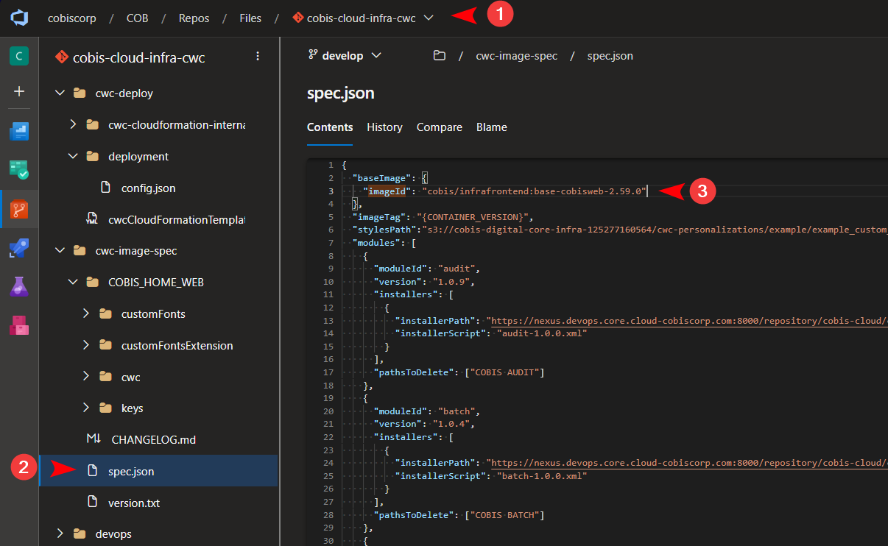
{kind=link}
Si se necesita conocer la ruta exacta donde está almacenada la imagen base con productos se puede acceder:
Clic aquí para acceder a la Ruta del pipeline
Clic en la primera ejecución
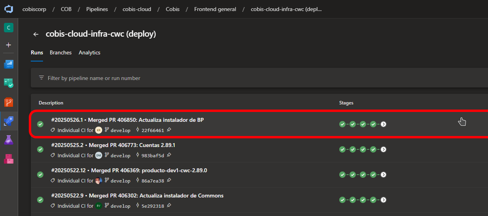
Clic en primary deploy
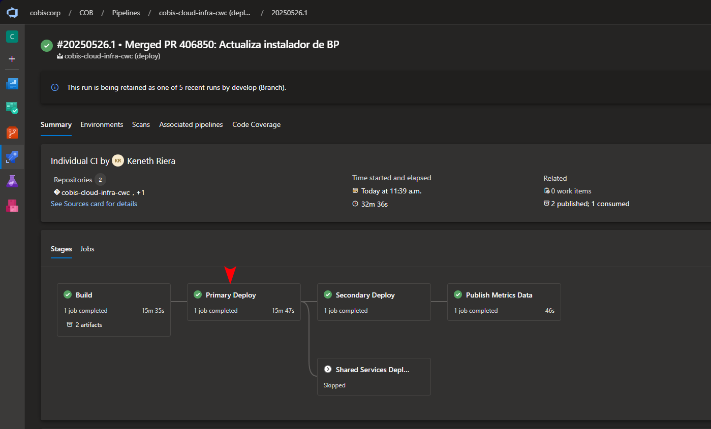
Nos situamos en la task
Tag docker imagey obtendremos elimageTag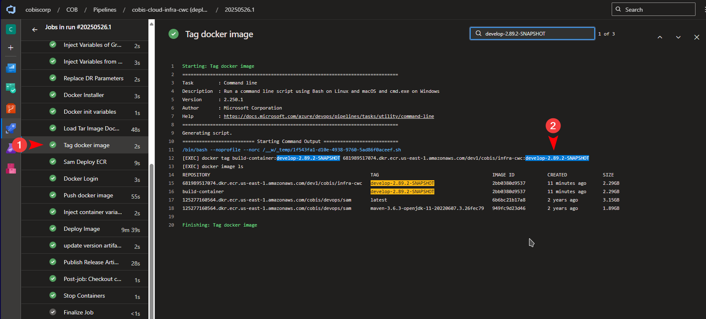
{kind=link}
{kind=link}
{kind=link}
2. Descargar la imagen base
La imagen base se puede descargar de dos formas, ya sea a través de Docker Desktop (paso 2.1) o a través de Docker Compose (paso 2.2).
Proceso de login
Proceso de login en la cuenta de AWS
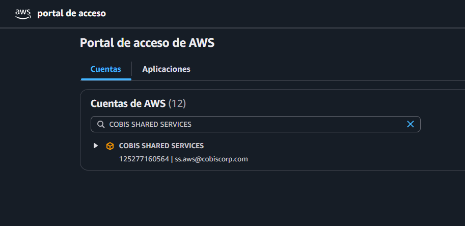
Ingresar a la cuenta de AWS COBIS SHARED SERVICES después en la zona de virginia buscar en ECR (Elastic Container Registry), el repositorio
cobis/infrafrontend.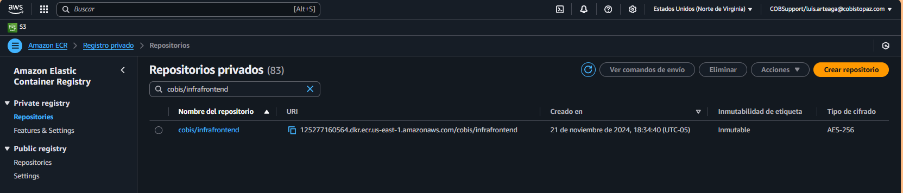
En el repo
cobis/infrafrontendcomprobar que se encuentra la imagen base que se desea descargar. En este ejemplo la imagen base que se utilizó fue: base-cobisweb-2.59.0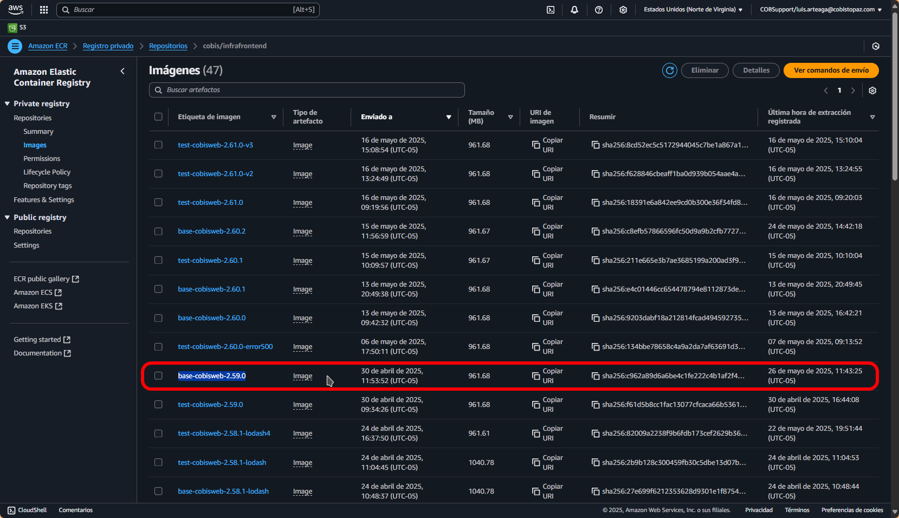
{kind=link}
{kind=link}
{kind=link}
El anterior comando se obtuvo de la opción ver comandos de envío
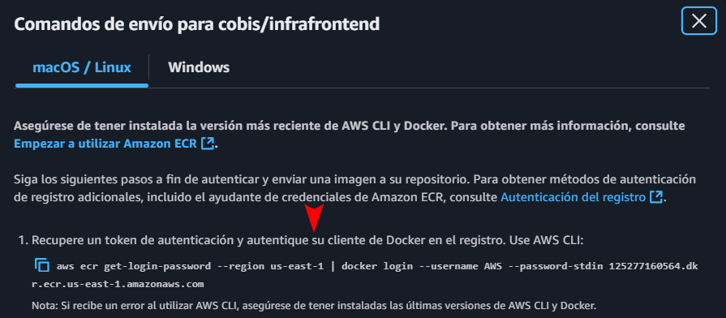
Ejecutamos el comando login

{kind=link}
2.1 Descargar la imagen base con Docker Desktop
Recursos Técnicos | Descripción | Detalle |
|---|---|---|
Docker Desktop | Instalar Docker Desktop | Tener instalado Docker Desktop. En caso de no tenerlo instalado, puede seguir el punto 2 de esta guía de instalación |
Iniciar Docker Desktop e ingresar al powershell y seguir los siguientes pasos:
Descargar la imagen base con Docker Desktop
Después se procede a descargar la imagen Docker con el siguiente comando:
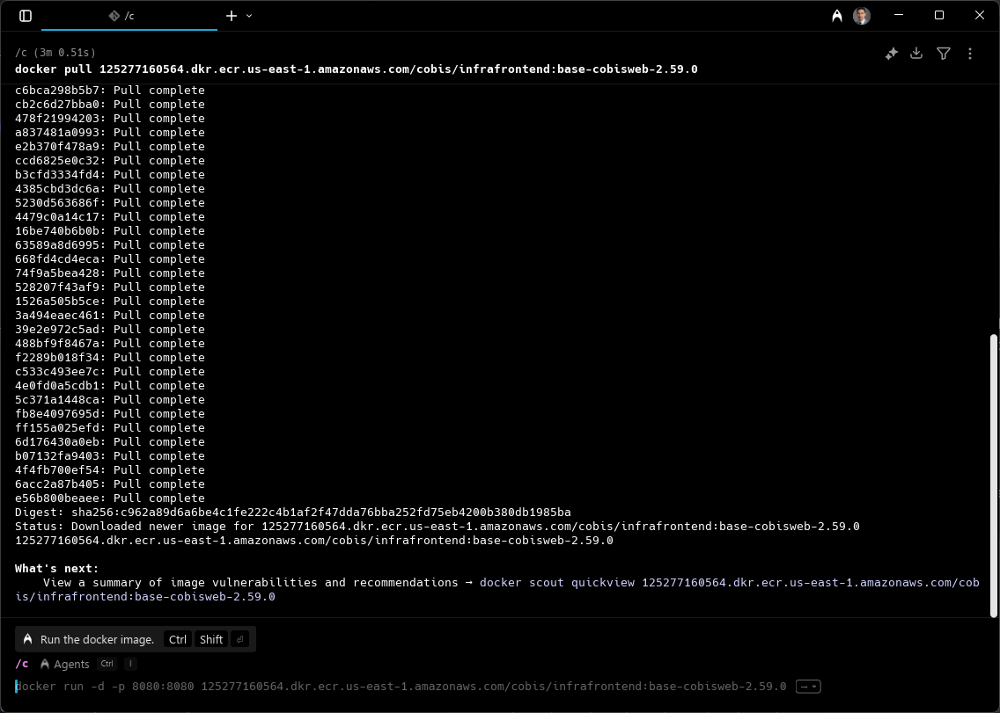
Una vez se descarga la imagen base se procede a validar su descarga a través del comando docker images que permite listar todas las imágenes base que han sido descargadas.
docker images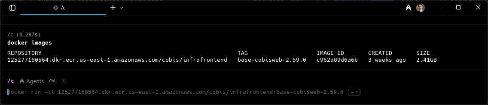
Para copiar la imagen Docker lo primero que se debe realizar es correr la imagen en la aplicación Docker Desktop.
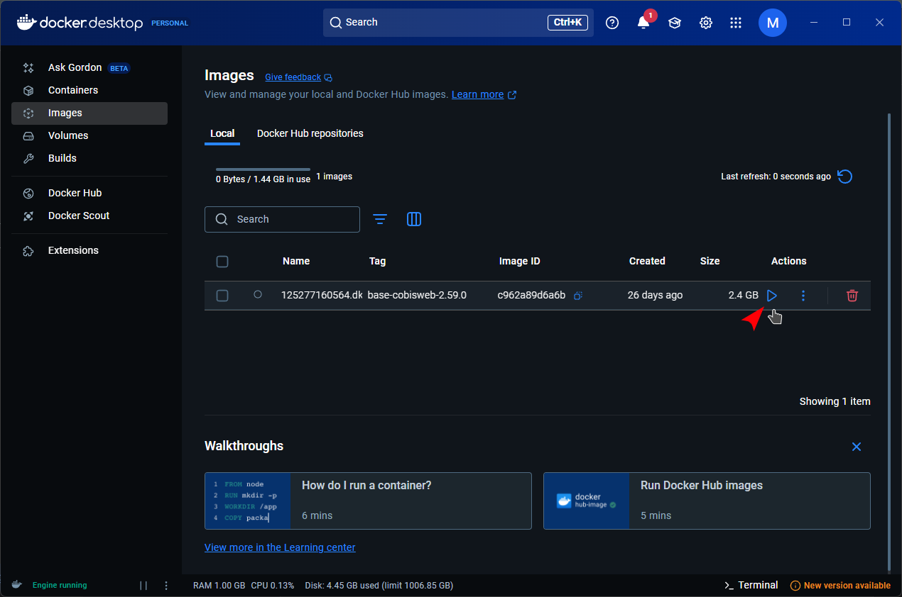
Después crear una carpeta donde se vaya a guardar la imagen base
mkdir ImagenBase cd ImagenBaseEn esa ruta ejecutar el siguiente comando:
docker ps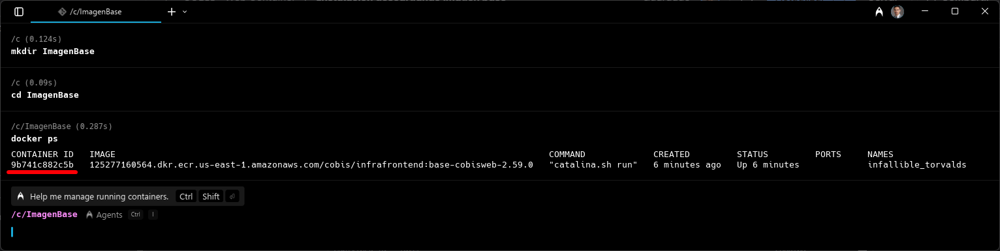
Copiar el id del contenedor y reemplazarlo utilizando la siguiente estructura::
docker cp $id_contenedor:/home/cobisuser/cobishome-web C:\ImagenBasedocker cp 9b741c882c5b:/home/cobisuser/cobishome-web C:\ImagenBase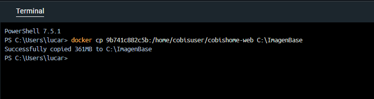
Después de ejecutar el comando se observa que la imagen se descargó correctamente de forma local.
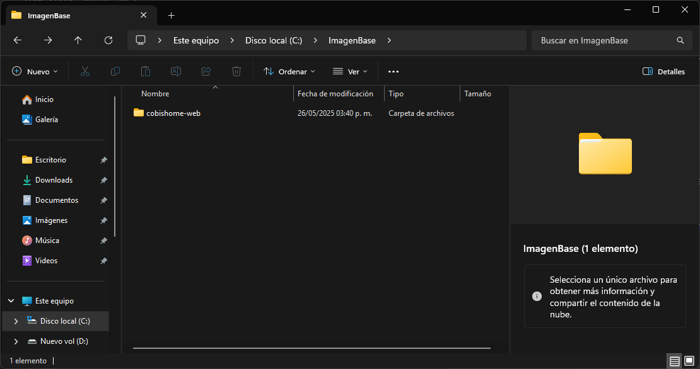
Captura de la descarga local de la imagen base sin módulos con Docker Desktop
{kind=link}
{kind=link}
{kind=link}
{kind=link}
{kind=link}
{kind=link}
2. 2. Descargar la imagen base con Docker Compose
Recurso | Descripción |
|---|---|
Archivo docker-compose-image que permite descargar tanto la imagen base como la imagen base con productos sin necesidad de instalar Docker Desktop. | |
git bash | Tener instalado git bash |
Descargar la imagen base con Docker Compose
Una vez se descarga el archivo se procede a validar que las credenciales de la cuenta de aws se encuentren actualizadas.
En el archivo .env validar que la cuenta de aws, el nombre de la imagen base y la ruta definida como salida sea correcta.
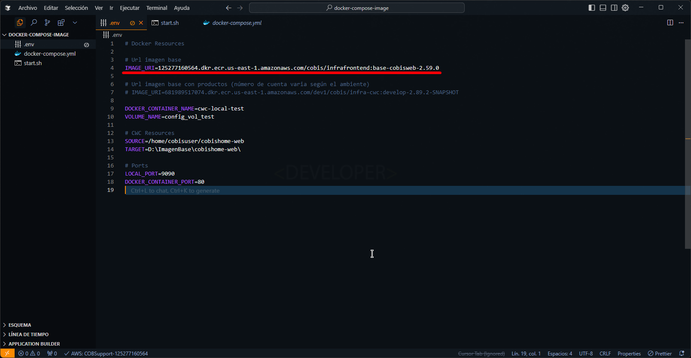
En el archivo start.sh validar que el response corresponda a la región y a la cuenta de aws que pertenece la imagen base.
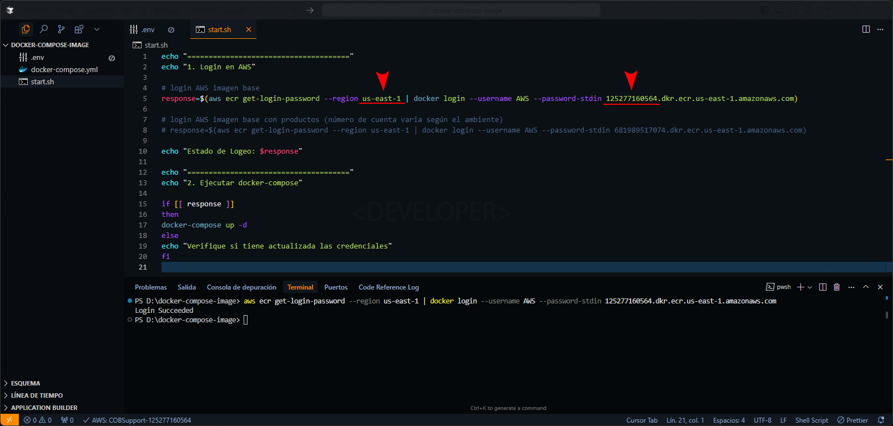
Después de haber validado los puntos anteriores se procede a ejecutar el siguiente comando en una consola bash.
sh start.shCaptura de la ejecución del comando
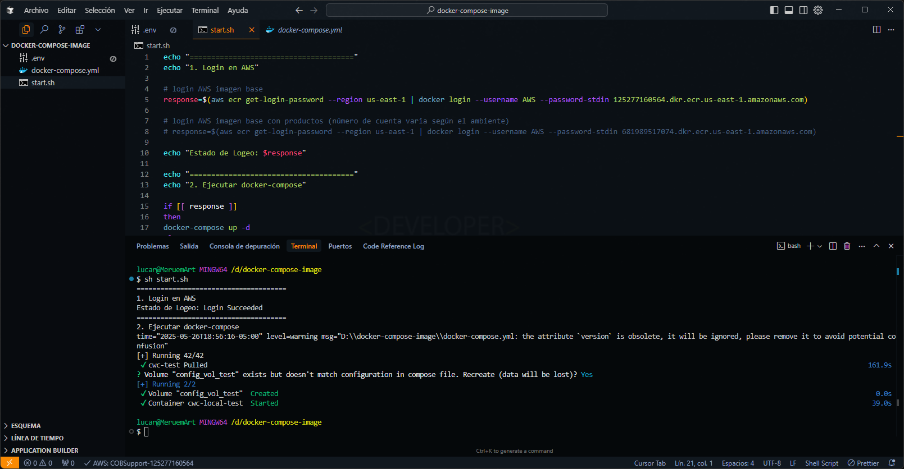
Por último, se observa que la imagen se descargó correctamente en la ruta local que se definió inicialmente.
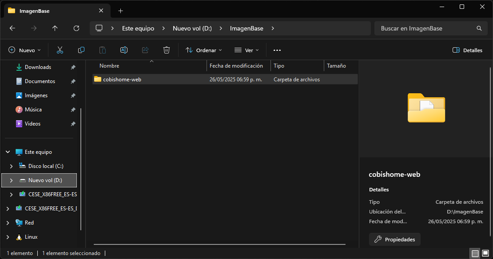
{kind=link}
{kind=link}
{kind=link}
{kind=link}
3. Modificar la configuración del log
El contenedor web de la imagen, está configurado para registrar los logs en consola, si desea que registre logs en archivos, debe utilizar el archivo cwc-log-config.xml (que se encuentra en la tabla inferior), y reemplazarlo en la ruta cobishome-web\cwc\infrastructure de su cobishome-web descargado localmente.
Recurso | Descripción |
|---|---|
Archivo cwc-log-config.xml | Recurso que permite registrar los logs. |
4. Verificar las licencias
Se procede a validar la licencia para ello se debe ingresar a la carpeta de la imagen base, después a la carpeta cwc\license y verificar que se encuentran agregados los archivos de la licencia: cwc.lic (licencia del CWC) y designerFra.lic (licencia de Designer Framework).
5. Configurar las variables de ambiente y de sistema
En el transcurso de la instalación del contenedor mediante la imagen base, el archivo cobis-container-config.xml que se encuentra en la ruta: cobishome-web\cwc\services-as\cobis-container queda con variables de ambiente y de sistema, por lo que las variables deben ser reemplazadas tal y como se indica en el siguiente documento: Configuración de variables de ambiente y del sistema
6. Configurar apache tomcat
A continuación, se debe configurar el archivo setenv.bat, el puerto del servidor y el archivo war, tomando como referencia el siguiente enlace: Configurar Apache Tomcat Para este ejemplo, el archivo war que se utilizó fue la versión más reciente del CWC y la configuración del archivo setenv.bat fue la siguiente:
En este punto es necesario validar que el archivo setenv.bat se encuentre apuntando a la ruta en que se encuentra la imagen base.
Ejemplo:
7. Levantar el contenedor local
En este paso se procede a levantar el contenedor local, en caso de que sea la primera vez puede basarse del siguiente documento: Levantar el contenedor CWC
Al momento de levantar el contenedor de forma local modo serverless se deben actualizar las credenciales de AWS de la cuenta COBIS PRODUCTO DEVELOPMENT NUEVO. De lo contrario podría aparecer el siguiente error:
Sugerencias
El desarrollador debe verificar la versión de CWC del contenedor que utiliza la imagen que va a descargar y utilizar la misma versión o superior del WAR correspondiente. Si se desea bajar la última versión puede verificar la última versión liberada aquí.